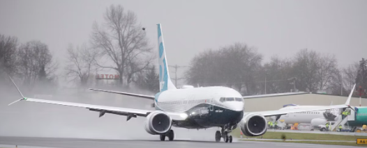

The B737 Variants
1. The Boeing 737-700 Variant:
- This standard version of the B737-700 launched in November of 1993. It was first delivered in 1997.
- The B737-700 has a seating capacity of 126 passengers (PAX).
- The B737-700 requires 4,800 feet of runway to successfully take-off.
- A typical B737-700 costs around $89 million, which makes it the least expensive Boeing aircraft.
- The maximum take-off weight of the B737-700 is 154,500lbs.
- The empty weight of a B737-700 is around 83,000lbs.
2. The Boeing 737-800 Variant:
- The Boeing 737-800 launched in September of 1994. It was first delivered in 1998.
- This stretched out version of the 700, can seat up to 189 passengers (PAX).
- The B737-800 requires 5,000 feet of runway to successfully take-off.
- The cost of B737-800 is around $106 million.
- The maximum take-off weight of the B737-800 is 174,100lbs.
- The empty weight of the B737-800 is 90,700lbs.
3. The Boeing 737-900 Variant:
- The Boeing 737-900 launched in 1997 and completed its first flight in August 2000.
- This variant of the Boeing 737 can seat up 220 passengers (PAX).
- The runway length for this variant is 6,800 feet for take-off.
- The Boeing 737-900 costs around $112 million.
- The maximum take-off weight of the B737-900 is 187,600lbs.
- The empty weight of a B737-900 is 93,680lbs.
4. The Boeing 737 MAX-8 Variant:
- In January of 2016, Boeing launched the MAX 8 and completed its first flight in May of 2017.
- The max capacity of the Boeing 737 MAX 8 is 210 passengers (PAX).
- The MAX series aircraft uses 20% less fuel and is 40% quieter.
- This new generation of the Boeing 737 aircraft costs $121.6 million.
- The maximum take-off weight of the MAX 8 is 181,200lbs.
- The MAX 8 weighs a total of 91,800lbs when empty.
5. The Boeing 737 MAX-9 Variant:
- At the Renton Municipal Airport in Washington, the MAX 9's first flight was in April of 2017.
- Just like the Boeing 737-900, the MAX 9 can carry up to 220 passengers (PAX).
- The Boeing MAX 9 features new fuel-efficient engines, which allows it to fly further.
- In this New Generation fleet of Boeing 737's, this costs a whomping $128 million.
- It's maximum take-off weight is 194,700lbs.
- The Boeing MAX 9 when empty weighs around 156,000lbs.